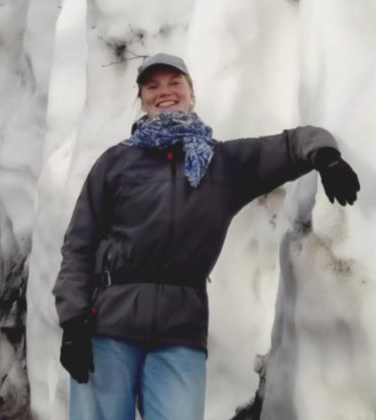

Umweltplanerin | GIS-Analystin | Naturschutz & Biodiversitätsmanagement
Ich bin Umweltplanerin mit Schwerpunkt Geoinformationssysteme (GIS) und einem akademischen Hintergrund in der Physik. Mein Interesse gilt der Analyse räumlicher Daten, der Umweltbewertung sowie der Entwicklung nachhaltiger und wissenschaftlich fundierter Planungsgrundlagen.
Durch die Kombination von GIS-Methoden, Datenanalyse und naturwissenschaftlichem Denken unterstütze ich die Aufbereitung komplexer Umweltinformationen für Planung, Naturschutz und Entscheidungsprozesse.
Ziel: Bewertung der Waldgesundheit anhand von NDVI-Werten.
Methoden: Fernerkundung, Landnutzungsfilterung, NDVI-Analyse
Werkzeuge: Sentinel-2 (L2A), Clip Raster, Raster Rechner, PostgreSQL, QGIS Cloud, IFrame
Ergebnis: Die NDVI-Werte korrelieren mit der Borkenkäferaktivität.
Ziel: Bewertung der Zugänglichkeit von Grünflächen in städtischen Gebieten.
Methoden: Pufferanalyse, Spatial Join
Werkzeuge: QGIS
Ergebnis: Identifikation unterversorgter Stadtbereiche.
Ziel: Identifikation hochwassergefährdeter Flächen.
Methoden: DEM-Analyse, Rasterklassifikation
Werkzeuge: QGIS, GRASS GIS
Ergebnis: Erstellung von Hochwasserrisikozonen.
Neben meiner beruflichen Tätigkeit bin ich leidenschaftliche Naturschützerin, Hobby-Botanikerin und Gärtnerin. Die Beobachtung und das Verständnis natürlicher Ökosysteme begleiten mich sowohl privat als auch fachlich.
Aufgrund meines langjährigen Interesses an heimischer Flora und Biodiversität habe ich mit der Landeshauptstadt Dresden einen persönlichen Pflegevertrag abgeschlossen. Dabei betreue und pflege ich eigenverantwortlich eine Fläche, auf der ausschließlich heimische Pflanzenarten gefördert werden.
In meiner Freizeit dokumentiere und bestimme ich regelmäßig Pflanzen, Insekten, Vögel und andere Organismen mithilfe der Apps Flora Incognita und iNaturalist. Dadurch erweitere ich kontinuierlich meine Artenkenntnisse und leiste gleichzeitig einen Beitrag zur Erfassung von Biodiversitätsdaten.
Darüber hinaus engagiere ich mich aktiv bei Pflegeeinsätzen von NABU und BUND. Die praktische Mitarbeit ermöglicht es mir, einen direkten Beitrag zum Naturschutz zu leisten und die Wirkung konkreter Maßnahmen unmittelbar zu erleben.
GIS & Geodaten: QGIS, PostGIS, Web Mapping
Programmierung: Python, MATLAB, SketchUp, PostgreSQL
Methoden: Räumliche Analyse, Geodatenverarbeitung, Rasteranalyse, Geoprozessierung
Kartographie: Thematische Karten und Datenvisualisierung
Fachgebiete: Umweltplanung, Naturschutz, Biodiversität und Landschaftsökologie
E-Mail: daina.damberga4@gmail.com
LinkedIn: https://www.linkedin.com/in/daina-damberga/